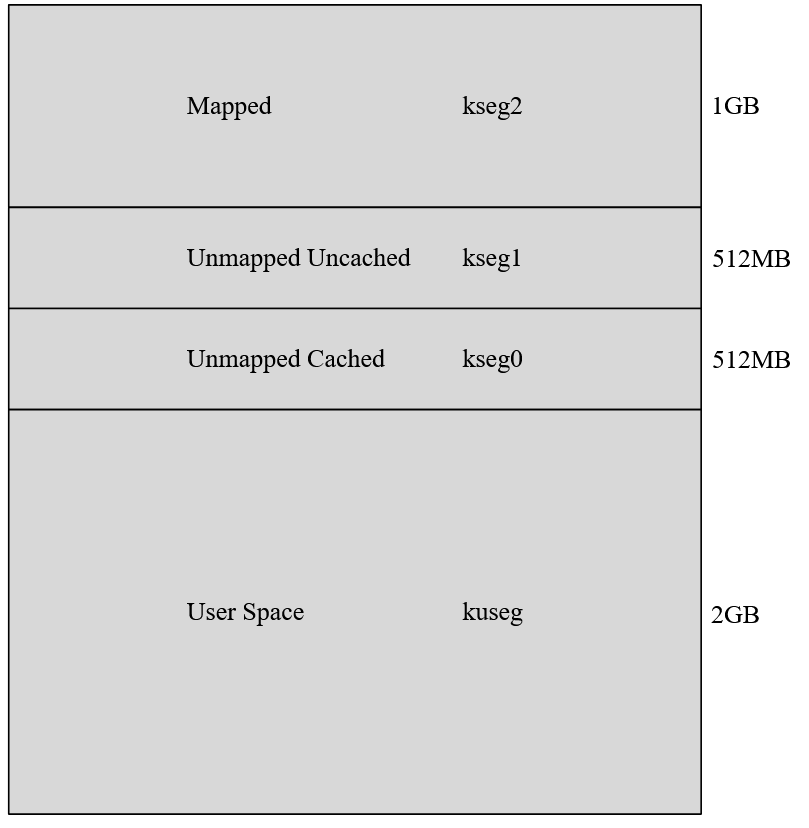

前言
OS的启动是一个很矛盾的事情,OS启动需要把OS放入内存,把代码放入内存需要OS调度,这就是鸡生蛋蛋生鸡的故事().因此,OS的启动需要硬件层面的帮助,它叫BootLoader.它负责运行第一段软件代码.
内存划分
在32位MIPS中,一次性能访问的空间是4GB (真小呀,怪不得现在都是64位,这打个游戏就爆内存了吧).从上到下分为:

- kseg2 是mapped的内存空间,访问需要通过MMU模块转换.
- kseg1 既没有mapped,也没有cached,所以它能在cache和MMU都没有初始化的时候使用.只需要去掉高三位地址就能实现地址映射使用.
- kseg0 没有mapped,所以在初始化cache之后就能使用.只需要去掉最高位地址就能实现地址映射使用.
- kuseg 是用户能使用的空间.
通过上面的分析我们知道,在刚开电的时候只有kseg1和kseg0能使用,另外两个都需要MMU和cache初始化之后才能用,但是等这俩初始化完,os早就能用了.
启动
硬件检测
这一步是计算机检测自己的硬件是否符合开机的要求,内存能用吗,I/O设备还好吗,CPU醒了没.这一步在X86体系使用的是BIOS (应该都听说过,一个合格的垃圾佬肯定折腾过自己电脑的bios) .这段代码存在ROM(Read Only Memory),它和RAM最大的区别就是断电之后不会消失(不是用的电容存信息),所以存放bios正合适.因为直接使用的ROM,所以更倾向于将其看成硬件结构,而不是软件,也常称作bios芯片.
读取MBR
MBR介绍
MBR(Master Boot Record)主引导目录,存放了预启动信息,分区表信息.这里存了操作系统的bootloader.
其446bytes存的是BootLoader,之后64bytes的分区表,之后是2bytes的魔数(bios检查这个来判断是否是一个分区的硬盘).
64bytes中每16bytes是一个分区的入口,所以一共有四个分区.也就是说一个系统最多四个入口.
分区介绍
磁盘有三种分区,主磁盘分区,扩展磁盘分区,逻辑分区.
- 一个系统最多四个主分区,最少一个主分区,主分区用于存储系统.只能有一个主分区处于active状态,其余为inactive,便于boot选择系统.
- 一个系统最多一个扩展磁盘分区,主分区和扩展分区之和最多不超过四个.
- 逻辑分区可以有若干个.逻辑分区可以认为是扩展分区的子集.
对于磁盘一般分出主分区存系统之后,剩余空间全部都是扩展分区,对于扩展分区一般分成多个逻辑分区.
Run BootLoader
那么读取了MBR之后,找到了BootLoader,接下来就应该run了.该段代码用于初始化硬件设备,建立内存空间的映射,为os做好准备.
运行引导程序
首先读入主引导记录至7C00H处,运行主引导程序.其任务包括
- 检查(
WORD)0x7dfe是否等于0xaa55 - 跳转到
0x7c00运行MBR中程序 - 将自己复制到
0x0600`处,继续执行 - 搜索主分区表中标志位
active的分区 - 将活动分区的第一个扇区(
boot sector)读入0x7c00 - 检查
WORD是否等于0xaa55 - 运行该扇区的指令(
bootsect.s),该函数的运行在下一个title中详解
加载内核
bootsect.s的工作流程如下:
- 首先将自身从原始启动区
0x7c00-0x7dff移动到0x90000-0x901ff - 读引导扇区的后四个扇区到
0x90200,调用引导阶段函数 - 设置一些参数,比如堆栈基址.磁盘参数表
- 加载内核映像.如果是大内核就加载到
0x100000,否则加载到0x10000 - 跳转到
Setup的入口点
setup.s的工作:
- 初始化硬件设备
- 为内核程序的执行家里环境
- 如果内核镜像在0x10000处,则将其移动到0x1000.
- 跳转到
startup_32()汇编程序
Head.s的工作(第一个start_32()函数)
- 初始化段寄存器和临时堆栈.
- 清除
efags寄存器的所有位 - 将
_edata和_end区间的所有内核未初始化区填充0 - 调用
decompress_kernal()函数解压内核映像,并将其移动到0x100000处. - 跳转到
0x100000物理内存处执行.
Head.s的工作(第二个start_32()函数)
- 因为这是在
0x100000地址的函数,所以相同的函数名没有什么问题(类似于c语言两个同名函数但是在不同工程里面),该函数用于为第一个Linux进程建立执行环境 - 初始化段寄存器的最终值
- 0填充内核的
bss段 - 初始化
swapper_pg_dir数组和pg0包含的临时内核页表 - 建立进程
0idle进程的内核模式的堆栈. - ……
- 跳转到
start_kernal函数,这个函数是第一个C编制的函数.
Start_kernal()的工作
- 这个函数用于启动初始化函数初始化各种设备,完成
Linux核心环境的建立 sched_init()初始化调度器build_all_zonelists函数初始化内存区- 调用
page_alloc_init()和mem_init()初始化伙伴系统分配器 - 调用
trap_init()和init_IRQ()对中断控制表IDT进行最后的初始化 - …
至此Linux内核单减完成,基于Linux的程序可以正常运行了.
用户层init依据inittab文件设定运行等级
Linux的运行等级划分:
- 0:关机
- 1:单用户模式
- 2:无网络支持的多用户模式
- 3:有网络支持的多用户模式
- 4:未使用的等级
- 5:有网络支持有X_Window支持的多用户模式
- 6:重启
执行rc.sysinit
该文件主要用于初始化一些软件层面的事情,比如PATH的配置,网络配置等.
启动内核模块
该步骤用于装载内核模块,Linux全面接手后续工作
执行脚本程序
根据运行级别不同,系统执行从rc0.d到rc6.d中的相应脚本程序,完成初始化和启动服务.
执行rc.local(可选)
此处是用户自定义的模块,类似开机自启动项.
执行login程序,进入登录状态
进入这一步,计算机算完成了的开机工作,硬件层面的通电,到MMU,Cache的建立,时钟频率等的计算,内核装载并开始进行服务,接下来就等着用户输入密码,开始使用这台电脑大干一番了.
后记
这篇博客充满着很多我看不懂的词汇,一些函数名字,一些看不懂的名词,OS的学习和OS启动一样矛盾.学习现代OS,哪就不得不使用这些概念,但是学习这些概念,那就不得不到OS学习的后期.就好像游戏一个后期boss给你拉到前台溜了一圈,玩家觉得头疼.这些暂且写着存在着,等后期学明白了就应该会明白吧.